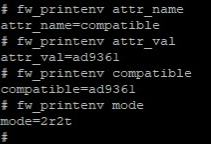

Synchronizing multiple AD9361 devices
Overview
Some systems may require more complex configurations that combine multiple devices. Operating multiple AD9361 devices while trying to coordinate data for each channel of each device is not practical for devices that operate independently without any mechanism for aligning data timing. Data synchronization into and out of multiple devices is required to implement such configurations.
The AD9361 contains the external control inputs and internal circuitry needed to synchronize baseband sampling and data clocks, allowing the system design to utilize multiple devices in parallel with equivalent performance to a single device.
Unfortunately, the AD9361 does not include internal RF synchronization. The ability to synchronize the internal RF local oscillators is not available without some external assistance. Luckily this is trivial to do in today’s FPGA systems, and will be explored below. An alternative option of using an external LO will also be explored.
Multi-Chip Sync (MCS)
{kind=link}

The figure shows a simplified block diagram of the AD9361. The device utilizes a fractional-N synthesizer in the baseband PLL block to generate the desired sample rate for a given system. This synthesizer generates the ADC sample clock, DAC sample clock, and baseband digital clocks from any reference clock in the frequency range specified for the reference clock input.
For MIMO systems requiring more than two input or two output channels, multiple AD9361 devices and a common reference oscillator are required. The AD9361 provides the capability to accept an external reference clock and synchronize operation with other devices using simple control logic. This detail is left off the simplified block diagram above.
Each AD9361 includes its own baseband PLL that generates sampling and data clocks from the reference clock input, so an additional control mechanism is required to synchronize multiple devices. A logical SYNC_IN pulse input is needed to align each device’s data clock with a common reference. Having a quick peek in the schematics of the schematics shows how this is done. The ADCLK846 (U301) Clock Fanout Buffer, accepts a 40MHz Rakon oscillator (Y301), and drives:
XTALN_Ato the “A” AD9361 device, [1]XTALN_Bto the “B” AD9361 device.REF_CLK_FMCback to the FMC connector.
The SYNC_IN pin on the AD9361 is driven directly from the FPGA, length
matched to both AD9361 devices, so the edge hits both parts at the same time.
The total number of devices that can be connected in parallel is limited only by the drive capability of the clock and logic signals. Although on the FMCOMMS5, we show 2 devices, this can be extended to n devices.
From a hardware perspective - this is all that is necessary, from a software
perspective, this is when things get interesting. It’s a matter of programming a
few registers properly (in the right order), and then asserting the SYNC_IN
at the right time.
Linux
there is a small AD9361 helper library that helps manages the mcs issues, that is common between all IIO software (the iio-oscilloscope, and the various network backends)
AD9361 helper Library for IIO applications.
Specifically, in ad9361_multichip_sync.c
Calling the function with the two devices is all that is necessary. You can see it being used in the osc application here.
To install the library on your system, follow the instructions below:
> git clone https://github.com/analogdevicesinc/libad9361-iio.git
> cd libad9361-iio
> mkdir build && cd build
> cmake ../
> make
> sudo make install
No-OS
Before initializing the parts using the ad9361_init (struct ad9361_rf_phy *ad9361_phy, AD9361_InitParam *init_param) function, AD9361_InitParam.gpio_sync should be set accordingly to your setup (for example: default_init_param.gpio_sync = GPIO_SYNC_PIN).
After the parts were initialized, calling the function ad9361_do_mcs(struct ad9361_rf_phy *phy_master, struct ad9361_rf_phy *phy_slave) function is all that is necessary (for example: ad9361_do_mcs(ad9361_phy, ad9361_phy_b)).
When it’s needed to go through a MCS sequence
Any time that software can effect things that can make the part go out of sequence, it’s necessary to repeat these steps. This would be any time changes are made to:
Baseband PLL (BBPLL) rate (device data rates)
FIR Filter Enable/Disable in case the BBPLL must change
Changing either Tx or Rx LO settings
RF Phase difference
As mentioned above, the AD9361 does not include internal RF synchronization internally, and needs a little help.
There are two methods to solve this issue:
measure the phase difference in the internal LOs, and correct in the FPGA
use an external LO signal
Internal LOs + FPGA
In this section, we assume that you have read and understood the math parts of the IQ Rotation and Correction section, and we will focus here on the practical aspects of things.
The FMCOMMS5 board includes two ADG918 wide band (-3dB @ 4GHz) switches that are used to connect either Tx1B from either AD9361 device to Rx1C on either AD9361 device. This allows four different states:
Output \ Input |
Device A (Rx1C) |
Device B (Rx1C) |
|---|---|---|
Device A (Tx1B) |
1 |
2 |
Device B (Tx1B) |
3 |
4 |
controlled by 2 different GPIO pins from the FPGA (CAL_SW_1 and
CAL_SW_2).

We can use this to find the phase difference the in two difference receivers (A and B) ( \(Theta_{Rx}\) ).
\(Theta_{Rx} = (Theta_{Rx1C_{B}} - Theta_{Rx1C_{A}})\)
Since our minimal switch matrix doesn’t include a spitter (which would have a phase error of it’s own), we need to have a multiple step measurement, and use a common reference of either of the transmitters (in this case \(Tx1B_{A}\) . To keep the math correct, we add zero to the above equation (in this case \(Tx1B_{A} - Tx1B_{A} = 0\) ):
\(Theta_{Rx} = (Theta_{RX1C_{B}} - Theta_{Rx1C_{A}} + (Theta_{Tx1B_{A}} - Theta_{Tx1B_{A}}))\)
Simple algebraic rearranging, provides a simple difference of phase measurement.
\(Theta_{Rx} = (Theta_{Tx1B_{A}} - Theta_{Rx1C_{A}}) – (Theta_{Tx1B_{A}} – Theta_{RX1C_{B}})\)
The transmitter is the same - by using a common receiver, comparing two transmit paths is quite easy.
\(Theta_{Tx} = (Theta_{Tx1B_{A}} - Theta_{RX1C_{A}}) – (Theta_{Tx1B_{B}} – Theta_{Rx1C_{A}})\)
To measure \(Theta_{Tx}\) and \(Theta_{Rx}\) at the same time, we use a function of the HDL, which loops back a transmitter channel into a receiver channel. This gives us a time reference between Rx and Tx that never changes. It is well understood that the digital signal in Tx is not the same phase as the analog Tx signal, but we are only using things as a reference. The absolute position doesn’t really matter. It’s just a function of stepping through the four setups, and driving the difference to the same. The math to (a) calculate the difference in phases, or \((Theta_{A} - Theta_{A})\) and how to correct for this phase difference inside the FPGA is detailed here.
In reality, we should just be able to measure the difference, and set the other difference to the same, but we find it visually appealing to drive all the differences to zero. This is done at the application level - for the osc application, it’s in AD9361 advanced plugin.
If you have questions about the code - please ask.
When it’s needed to go through a internal LO phase calibration sequence
Any time that software can effect things that can make the RF LOs to go out of phase, it’s necessary to repeat these steps. This would be any time changes are made to:
To the internal RX/TX RFPLLs (LOs)
The MCS is done
This changes does include internal changes, like if you place the AD9361 into TDD mode (where the LOs or LO dividers get powered off). What this really means - is you can’t use the AD9361 in TDD mode (where the LOs get turned off) and get phase coherency at the RF level. Users are suggested to keep the LOs on, by using FDD mode.